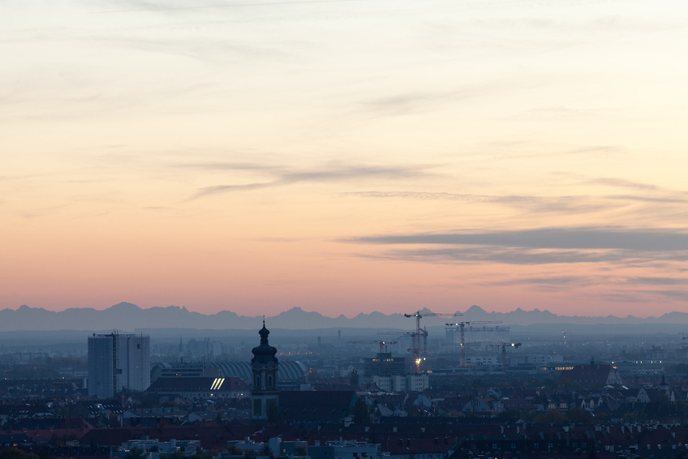

The conference will be hosted close to the city center with plenty of choices for housing and easy access by public transport. Since the time of the conference conflicts with the summer term teaching period, which means that all lecture halls are busy, we have decided to go for the Sheraton hotel at Munich Arabella park.
We have contacted the hotel to confirm that the two target weeks in June 2018 are available and that the format of the conference is feasible. The Sheraton features a separate conference area with a common open space for breaks and posters and a number of halls for the main conference, the workshops, and demo sessions. The largest hall easily accommodate more than 250 attendees with individual tables. Four halls for 100+ people are available in parallel.
The venue is easily reached by subway (line U4) and situated in a nice neighborhood. The Westin hotel (for additional accommodation) is on the opposite side of the street and several other hotels are close by. A number of restaurants are in walking distance. The city center (Odeonsplatz, Karlsplatz) is within 10min by direct subway. Plan Bs: Munich offers a number of further sizable hotels that fulfill the requirements for MobiSys in case the primary venue would not be available. Those include the following: Tge Grand Westin, Hilton Munich Park, Sofitel Munich Bayerpost, and Maritim Hotel Munich. Moreover, the city features several convention centers, such as Congress Center Munich (CCM) and the Conference Center of the Hannes-Seidl-Stiftung that could be considered. Also the backup venues are easily accessible with public transportation.The city of Munich is the capital of the State of Bavaria located in the South of Germany. With 1.4 million inhabitants (2.6 million in the urban region), Munich is the third largest city of Germany (after Berlin and Hamburg).
Bavaria is one of the wealthier German states and Munich is a stable and prospering place with a positive economic and other trends. Bavaria and Munich strive for (and succeed in) attracting entrepreneurs, especially in the high-tech sector and emphasize digitization and mobility in the future as important themes. Munich is a safe place to visit (lower crime rate than other German cities) and, people enjoy a high quality of life with many quality restaurants, cafés and so on.
In this spirit, Munich is sometimes referred to as the “northernmost city of Italy”. The central city area is lively day and night and distances are short enough to allow moving around on foot or by one of the many means of public transportation (see below). The city is very international and the locals welcome visitors who come plentiful to see the city (not just during and for Oktoberfest).
The city and state are also home to substantial industry related to mobile systems, including companies such as BMW, MAN, Audi (in Ingolstadt) from the automotive sector and Google, IBM, Nokia, Siemens, Rohde & Schwarz, Huawei, and a broad spectrum of SMEs related to mobile and networked systems and services.
Munich features two universities, Technische Universität München (TUM) and Ludwigs-Maximilian-Universität München (LMU), both offering computer science and other schools related to MobiSys. Moreover, Munich hosts a University of Applied Sciences. This yields a substantial local student and researcher community in the field.
Munich has a large international airport (MUC), which is the Lufthansa hub besides Frankfurt. MUC is serviced by essentially all major airlines (and airline alliances), features direct international flights to continents and otherwise usually connects via one hop to all destinations not directly reached. The airport services close to 41 million passengers in 2015. See http://www.munich-airport.de/en.
The airport is located in the North of the city, connected via two suburban train lines to the city center (S1 and S8); a ride takes some 35-45 minutes and costs EUR 10.50. Taxis are also available but the fare from the airport to the city is some EUR 50-60. Depending on the time of day, taxis may be slower than the train. All major car rental companies can be found at the airport as well as downtown.
Munich also features three train stations, Munich main station (Hauptbahnhof) and Pasing (to the West) as well as Munich East. They are frequent services to all major cities within Germany and to the neighboring countries, often on the German high-speed train ICE.
Munich offers a wealth of local transportation options, including an extensive subway and suburban train system, many tram lines, and countless buses. All share the basic fairly simple tariff system that requires only one type of ticket for all of the above. The city also offer many bike lanes and rental bikes for individual transport. Finally, several car sharing services such as DriveNow or car2go are available for individual trips inside and around the city.